| 日付 | 2020年1月5日（日） |
|---|---|
| 山域 | 阿武隈周辺 |
| メンバー | 家族（妻、長女・8歳、長男・6歳） |
| 山行形態 | 子連れ日帰り |
| アクセス | 車 |
| ルート (Map) | 小田休憩所駐車場 (8:37) - (9:48) 尖浅間 - (10:31) 宝篋山 (11:56) - (13:05) 小田休憩所駐車場 |
今年の初登りは宝篋山。
昨年、雪入山に登ったときに小屋の人にお勧めの山を尋ねたら
宝篋山という山を教えてもらった。
「西の高尾、東の宝篋」と呼ばれているとか。
もちろん「西の富士、東の筑波」から生まれた言葉だろう。
その売り文句のインパクトは大きく、来冬の晴れた日に
宝篋山に登ろうと決めていた。
人気の山らしいので、初登りで行くのにぴったりの山だ。
登山口の駐車場に到着。標高30m。
比較的大き目の駐車場があるが、すでに7割ほどが埋まっている。
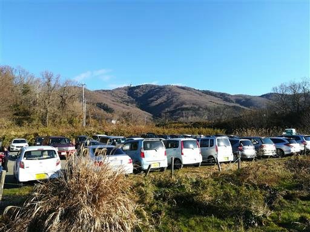
常願寺コースと極楽寺コースの分岐点に到着。登りは常願寺、下りは極楽寺とする。
背後に見えているのがこれから目指す宝篋山だ。
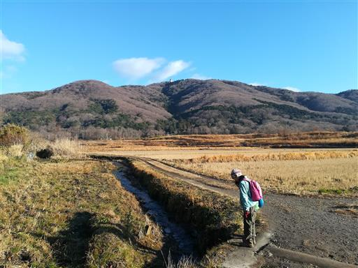
気温は低く水が凍りついている。
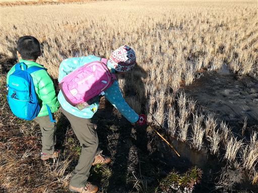
田んぼや畑のなかの砂利道を歩く。冬枯れの美しい風景が広がる。
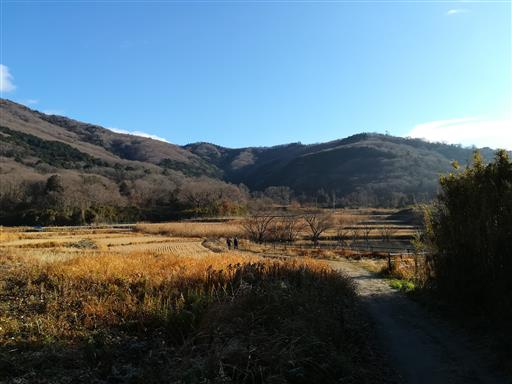
分岐点はたくさんあるが、標識が完備されているので迷う心配はない。
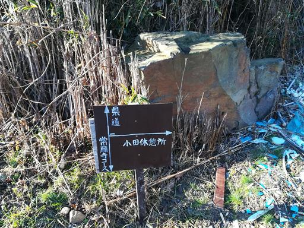
山に近づき、少しずつ登山道っぽくなってくる。
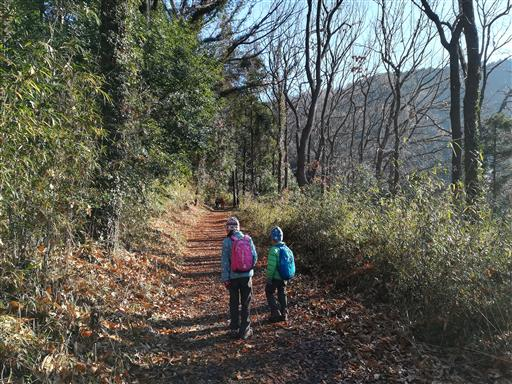
途中の分岐点で沢の小道と呼ばれる道に入る。
寒々しい景色が広がるが、沢沿いの道を歩くことができる。
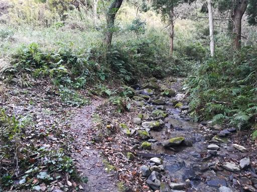
少しだけ植林地帯がある。
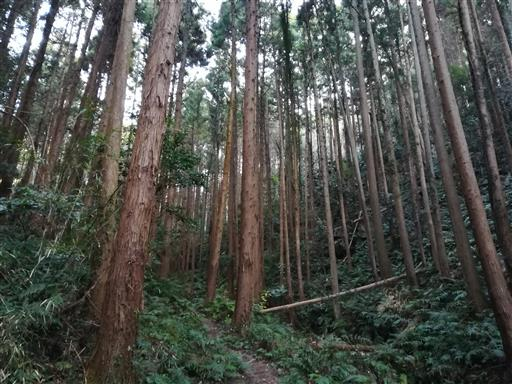
ほとんどは落葉樹林や照葉樹林が広がる。
長長坂と呼ばれる坂を登って行くが、名前とは裏腹に長くは続かない。
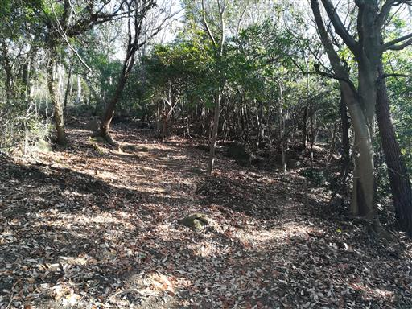
尖浅間山頂に到着。
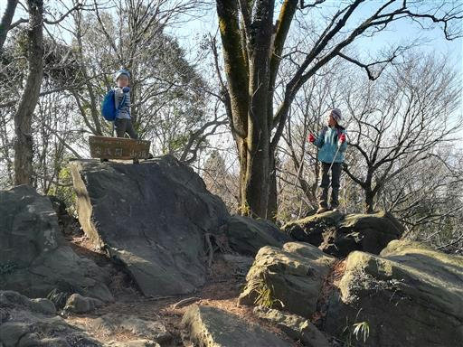
遠くに辛うじて富士山が見える。
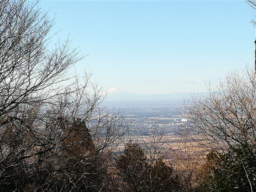
こちらはこれから目指す宝篋山。
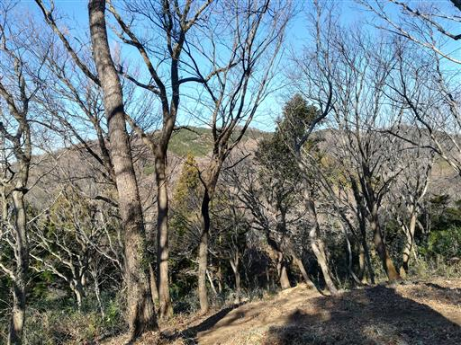
尖浅間は中継地なので休憩せず、すぐに出発する。
ここからはあまりアップダウンのない尾根道だ。
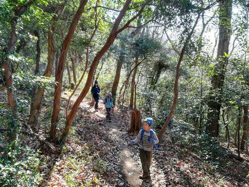
合体木。コナラとサクラがくっついて、どちらも大きくなった。
まれにこのような木を見かける。
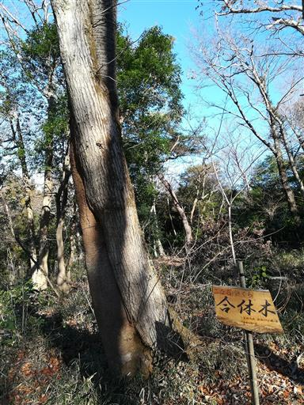
美しい尾根道が続く。
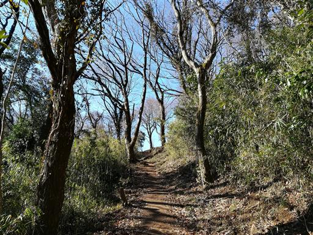
日影には少しだけ雪が残っている。
昨夜は雨が降っていたので、この辺りは雪だったのかもしれない。
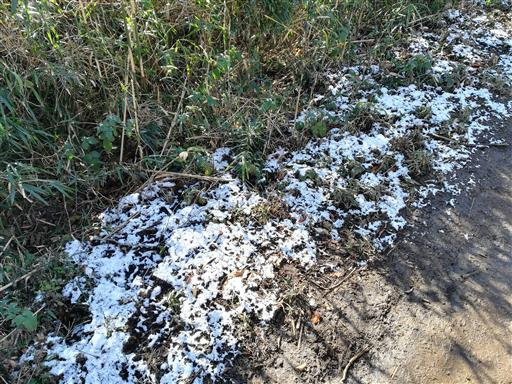
椅子とテーブル。
山でこんなにリラックスできそうな椅子は初めて見た。
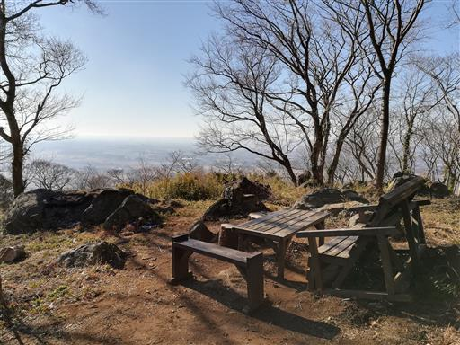
木を切る作業をしている人がいる。ここまで車で入れるようだ。
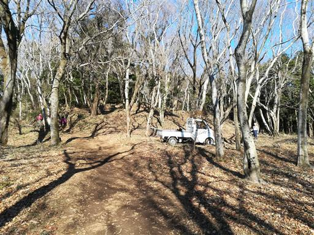
側には枝がものすごい高さまで積み上がっている。
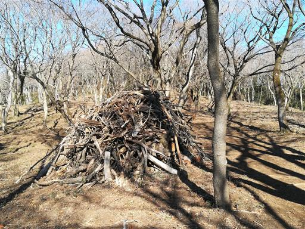
宝篋城の空堀跡。昔はここに山城があったようだ。
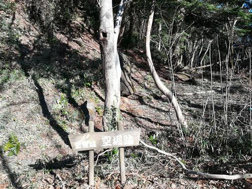
山頂直下には巨大な電波塔が建っている。
立地条件の良い山なので仕方がないが、少々無粋だ。
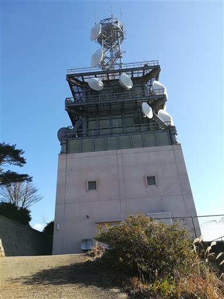
鳥居を潜ると山頂はすぐそこだ。鳥居には浅間神社と書かれている。
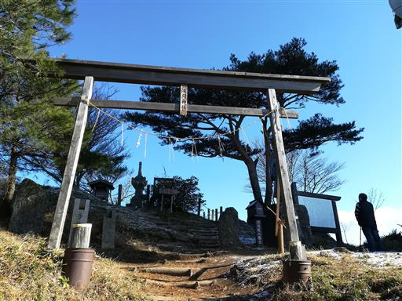
宝篋山山頂に到着。標高461m。
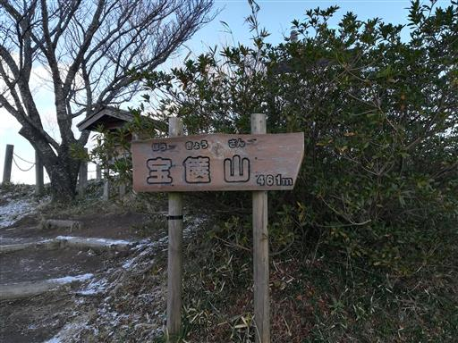
山頂北側は雪に覆われている。奥に見えるのは筑波山だ。
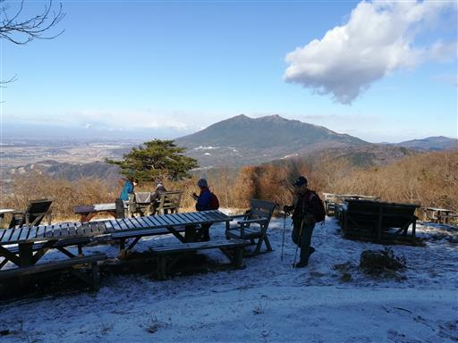
多くの椅子とテーブルがあるが、残念ながら北斜面にあるものは
雪に覆われていて使うことができない。
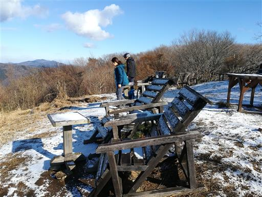
山頂の真ん中に大きな宝篋印塔が建つ。
鎌倉時代作と推定されており、かなり古い代物だ。
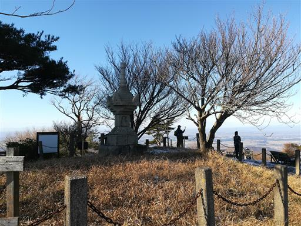
山頂からは素晴らしい展望が広がる。
広大な関東平野の奥に、薄らと富士山が見える。
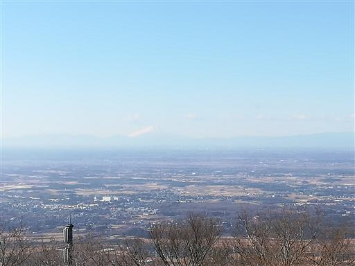
奥に見えるのは霞ケ浦。日本第2位の広さを誇る湖だ。
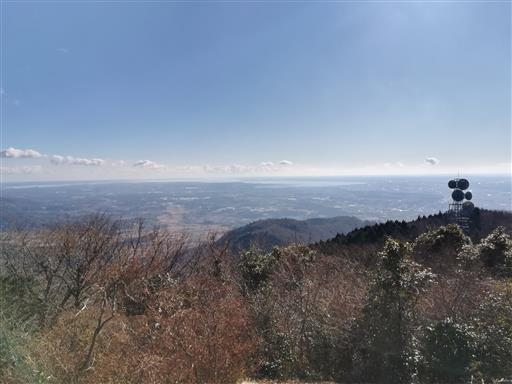
左に見えるのは、この山の存在を教えてくれた雪入山方面だ。
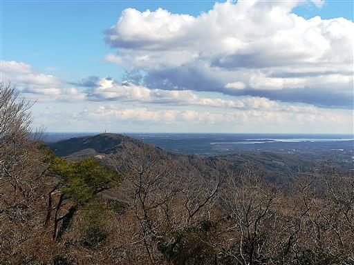
そして筑波山。宝篋山の近くにあり存在感抜群だ。
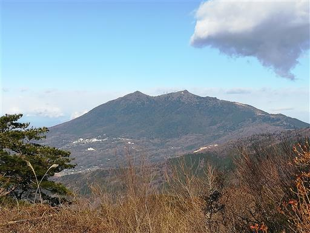
山頂で昼食をとったら下山開始。宝篋城跡に寄り道する。
高台の平坦地だが城跡の遺構はほとんど残っていない。
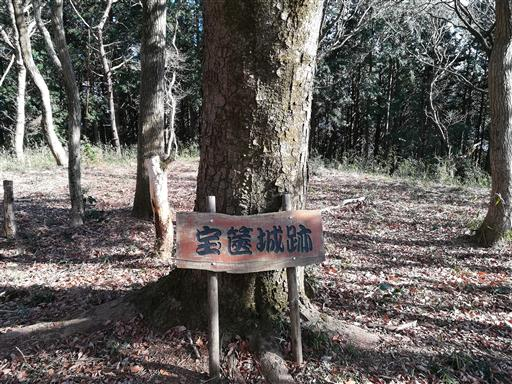
どう見てもツツジの花だが、なぜこんな時期に咲いているのだろう？

常願寺コースと分かれて極楽寺コースを下る。
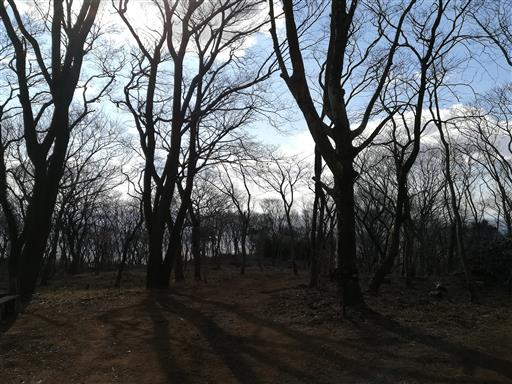
富士岩。富士山形の立派な岩だ。
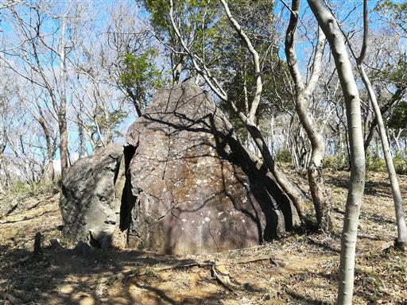
ワニ岩。ワニの口の形。
筑波山同様、名前の付けられた奇岩が所々で見られる。
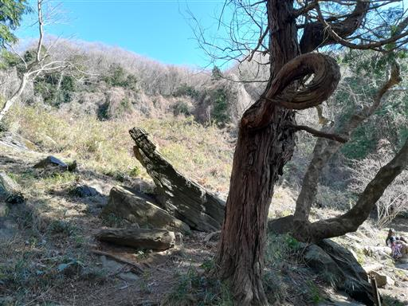
途中から沢沿いの道になる。
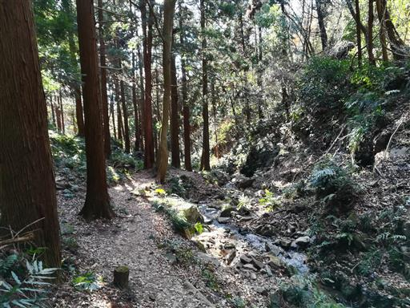
慈悲の滝。大きな滝はないが、ところどころにある小さな滝に名前が付けられている。
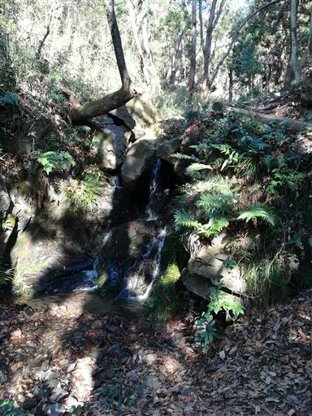
足元に小さな五輪塔が並んでいる。
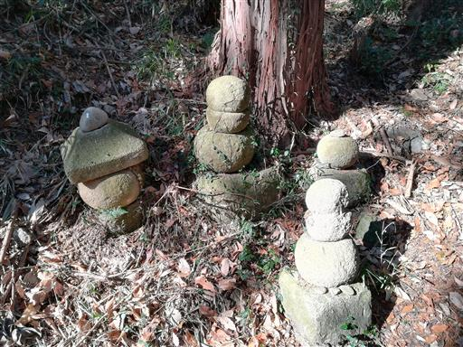
しばらく歩くと他を圧倒する巨大な五輪塔が現れる。
これも鎌倉時代のものらしい。
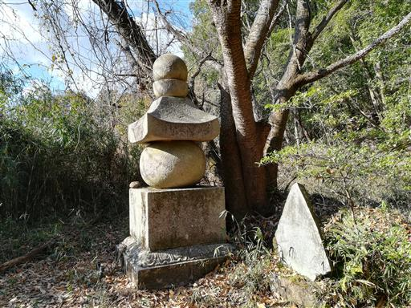
下山。
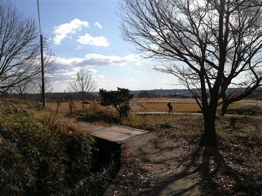
水たまりで生物を発見。
しっぽをひよひよさせて泳いでいて、オタマジャクシに似ていたが、冬なので違うかもしれない。
泥の中に隠れてしまうので、正体は分からなかった。
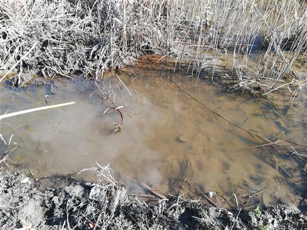
駐車場そばの休憩所でトイレに寄る。特に売店のようなものはないので、お金を落とすことはできない。
宝篋山は美しい登山道や山頂からの大展望が素晴らしく、程よく賑わっている良い山だった。
手軽に山に登りたいときには良い選択肢になりそうだ。
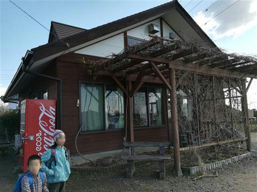